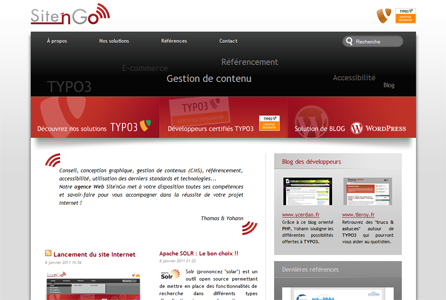
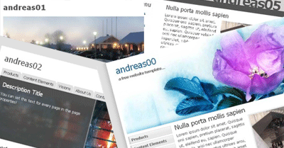
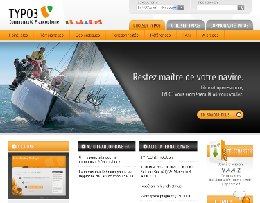
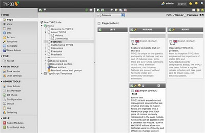
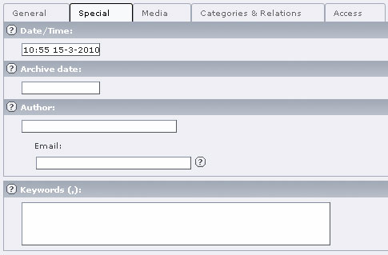

New web agency Site'nGo

Toutes nos félicitations pour le nouveau site web de l'agence web Site'nGo , le lancement du site internet de Site'nGo été le 6 Janvier 2011, l’agence est créer par les deux développeurs TYPO3 Yohann CERDAN et Thomas LEROY, elle...
Tunisian Websites made with TYPO3
Ci-dessous la liste des meilleurs sites tunisiens créés avec le CMS open source TYPO3 :
Open Source Tunisie
Portail des logiciels libres en Tunisie
http://www.opensource.tn/
Ministère de la Formation Professionnelle et de...
Free TYPO3 Templates

Voici quelques templates TYPO3 gratuits à téléchargé pour débuter avec TYPO3 ou bien pour créer juste un site de demo.
1024px
Templates HTML: 1024px TemplatesFichier export TYPO3: 1024px TypoScript (t3d)Description: Ce modèle...
TYPO3 Web Service
Une nouvelle extension typo3 webservice à été mis sur TYPO3 Repository développer par naw.info permettant de créer, modifier et supprimer des données dans TYPO3 à partir d'une application externe.
Cette extension permet...
New Fluid slides
Sebastian Kurfürst (créateur du système de templating Fluid) à ajouté deux nouveaux slides sur Fluid qui sont les suivants :
Fluid for Designers
Advanced Fluid
Pour voir la liste complète des slides de Sebastian...
Launching the new website typo3-fr.org

Le nouveau site TYPO3 francophone typo3-fr.org est en ligne après des mois de travail et de contribution des différents membres de la communauté TYPO3, nos félicitations pour tous les contributeurs qui ont réussit à produire ce...
The release of TYPO3 version 4.4 stable

La version 4.4 de TYPO3 est sortie en version stable, elle est disponible en téléchargement sur la page http://typo3.org/download/packages/.
SEO tt_news articles

En parlant de référencement dans un le billet Référencement avec TYPO3, cette fois ci je vais montrer le référencement des articles postés avec l'extension tt_news dans la vue SINGLE.
Lors d'ajout d'une nouvelle avec tt_news,...
Votez pour Typo3
Guide TYPO3 on facebook
Guide TYPO3 on twitter
TYPO3 job offers
Soon, we will be adding a new section dedicated to TYPO3 job offers in the world. Click here to submit a new job TYPO3.
Google Advertising